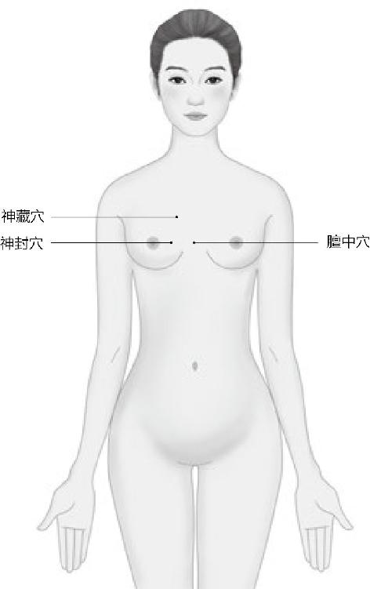
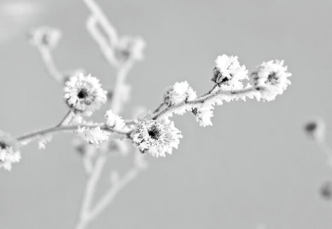
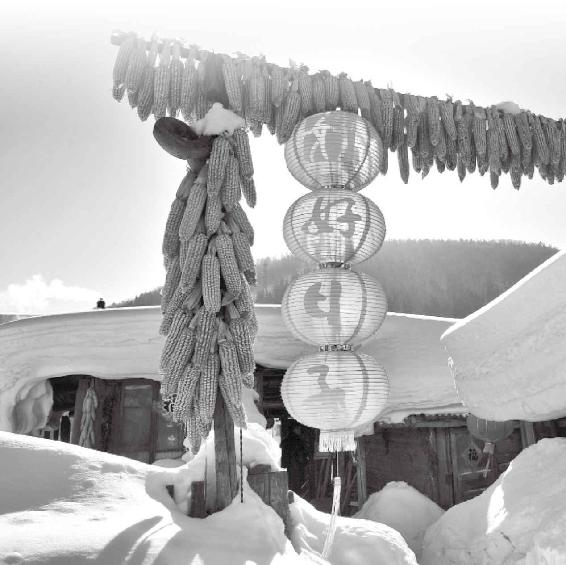
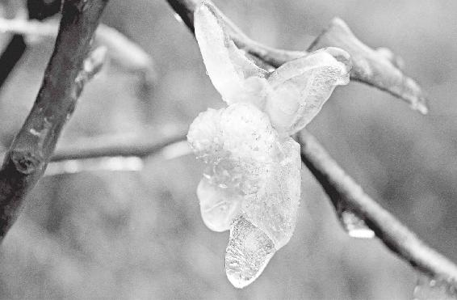
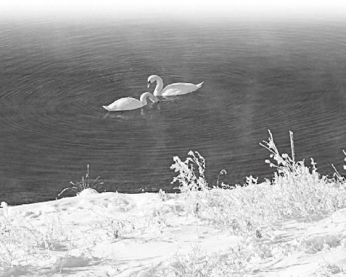
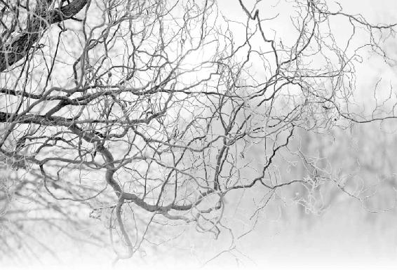

冬天应该是“藏”的季节，这时应该整理、修复，关爱自己，不要去折腾，不要去张扬，不要去外露了。如果有什么想法和愿望，到了严酷的冬天，也不要露出来了。
到冬天能把自己的心神“藏”起来，这都是本事，千万不要以为这些自然而然就能做到。
你拼命工作，拼命奋斗，最后是不是要享受应有的成果？我们在春天播下去的种子，夏天长了，秋收了，到冬天了，是不是就应该去品尝，去享受这一切？
经文：
冬三月，此谓闭藏，水冰地坼，无扰乎阳；早卧晚起，必待日光，使志若伏若匿；若有私意，若己有得，去寒就温，无泄皮肤，使气亟夺，此冬气之应，养藏之道也；逆之则伤肾，春为痿厥，奉生者少。
在冬天，身体和愿望都不要轻易暴露在外
梁冬：“冬三月，此为闭藏”，请问是什么意思？
冬三月有六气：立冬、冬至、小雪、大雪、小寒、大寒。
徐文兵：一年中，我们经历了春生、夏长、秋收，到了冬天，就该闭藏了。所谓“闭”，从字面的意思讲就是把门窗关起来。夏天为了室内通风，我们要开窗、开门。到了秋天，就要收一点。快入冬了，过去家里都开始干什么？贴窗户纸。
在门窗外边用毛纸沾上浆糊，给它封起来。为什么要这么做？老百姓有句俗话，叫“针尖大的窟窿，斗大的风”。如果不贴窗户纸的话，容易露缝儿。过去不像现在，没有特别严实的塑钢或者是封闭的胶条，都是木窗加块玻璃。冬天西北风吹来的时候，看似不起眼的一个小缝儿、小窟窿，漏进来的风特别大，人就容易受寒，着凉。
阳历的十一月五号就立冬了，三个月以后，到明年的二月的四号、五号就是立春，中间这三个月叫“冬三月”。
一方面是把门窗关起来，另外还要糊起来，完全关闭住。我记得小时候，一到冬天，窗户上都结了特别厚的冰。所以，我们除了封窗户缝儿以外，晚上睡觉的时候还在窗户外挂一个棉帘子，这样屋里就很暖和。这就叫“闭”！把寒闭在外面。
“藏”比“闭”的程度更深一点。“藏”包括几层意思：一是藏自己的身体，身体不要暴露在外边；另外，“藏”自己的意志和心神，就是如果有什么想法和愿望，到了严酷的冬天，轻意不要外露。
“闭”，就是把门窗关起来，把寒闭在外面。
梁冬：此为“闭藏”！真乃微言大义，一个字包含的不但有精神方面的，还有身心方面的信息，包括把神藏在里面。
徐文兵：我们经常说神是无形的，无相的，你看不见，摸不着，那它藏在哪儿？中医里有两个穴位，分别叫神封穴、神藏穴。
“藏”包括几层意思：一是身体不要暴露在外边；二是如果有什么想法和愿望，到了严酷的冬天，轻易不要外露。
梁冬：这两个穴位有什么用呢？
徐文兵：这两个穴位就是藏神的地儿，在哪儿？在我们的胸腔正中是胸骨，边上接的是肋骨，两根肋骨之间有条缝隙——肋间隙，肋间隙和胸骨交界处正好是一个小坑。神封穴就在第四、第五肋间隙处，而神藏穴则要再往上一点，第二、第三肋间隙处，它中间围着一个穴——膻中穴。你想，神封、神藏你要扎一针进去，扎深点，扎到你的主动脉弓了。要知道，我们的心脏搏动，往出输血，就是通过主动脉弓分布到全身的。你扎到那儿了，你还要命呢！所以要命就出神儿了。

我们碰到陌生人的时候，如果觉得这个人不安全，会不由自主地把两只手交叉护在胸前，这是一种自我保护，护的就是神封、神藏穴。所以，这两个穴是禁针的，不许扎的。
我们觉得不安全时，会不由自主地把两只手交叉护在胸前，这是一种自我保护，护的就是神封、神藏穴。
梁冬：那可以做什么呢？
徐文兵：可以做按揉，比如你碰上啥事，觉得义愤填膺，胸口憋闷得不行的时候，可以捶胸顿足嘛！捶捶打打，把那些骚扰你封藏起来的神的邪气捶打出去。
梁冬：捶胸顿足是我们身体的本能，是身体的大智慧。
你觉得义愤填膺，胸口憋闷得不行的时候，可以捶胸顿足，这是身体的大智慧。
徐文兵：大猩猩不高兴的时候，招牌动作就是捶打、击打胸口正中——膻中穴。
天寒地冻，别轻易骚扰体内阳气
梁冬：前面我们讲到“冬三月，此为闭藏”，下面是“水冰地坼，无扰乎阳”。
“冬”是从“终”字引申来的，它是一个象形字，就好像你把一个东西拧干了，把最后那几滴水拧出来就完了。
徐文兵：阳历的十一月五号就立冬了，三个月以后，到二月的四号、五号就是立春，中间这三个月叫“冬三月”。冬者，终也，就是剧终、结束、终点的意思。
“冬”是从“终”字引申来的，它是一个象形字，就好像你把一个东西拧干了，把最后那几滴水拧出来就完了。一年从春天开始，夏天到高点，秋天收敛，冬天结束，这是“冬”的涵义。
现在的供暖期一般是十一月十五号，就是入冬以后十天，这也是为了节约能源。其实在立冬后供暖之前的那段日子，我们最容易感冒，因为屋子里特别冷，甚至比外边还冷，特别阴，暖气还没有开。等暖气来了，屋子里暖和一点后，人就不容易感冒了。
梁冬：冬天，北方人比南方人要好过，南方一年到头都没暖气，太可怕了。
徐文兵：南方的冷是又湿又冷，那种寒气真是往骨头里渗的，而且南方人容易长冻疮。另外，我小时候，冬天差不多零下十度、二十度，再加上那会儿营养条件不是太好，吃的70％是粗粮，所以长冻疮很普遍。
南方的冷是又湿又冷，那种寒气真是往骨头里渗的。
梁冬：长冻疮跟吃粗粮有什么关系呢？
徐文兵：吃粗粮热量不够啊！那会儿供应的油、肉都是定量的。我记得上大学那会儿，食堂的伙食不好，回到家里我跟我妈说：“我想喝油。”因为身体里缺少油，所以本能地就想吃这东西。
另外，关于“冬三月”的养生原则，《黄帝内经》说的主要是针对中原地区，它不像东北那么冷，又没有南方阴冷。所以大家可以根据所居住的环境去调整。
梁冬：接下来是“水冰地坼，勿扰乎阳”。
徐文兵：水都结冰了，地都冻裂了。
在水结冰，地冻裂的时候，你就不要去扰动，或者是搅扰自个身体里那点微不足道的阳气。
梁冬：“坼”为“裂开”的意思。
徐文兵：在水结冰，地冻裂的时候，你就不要去扰动，或者是搅扰自个身体里那点微不足道的阳气——“无扰乎阳”。
梁冬：“水冰地坼”除了说冬天大地的景象以外，也在形容我们身体里的环境。
徐文兵：有道理。你想想，为什么长冻疮的时候，有的人是手上裂开一道口子，有的人却裂在脚后跟上？
脚后跟裂开的那道口子常常不容易愈合，所以我们不得不抹一些油、膏的，有的人在外面还用保鲜膜敷上。为什么？干燥嘛。保鲜膜和塑料布是不透气的，能保存点水分。这就是什么？“水冰地坼”。
梁冬：我们的身体也是一个微缩的大自然。
我们的身体也是一个微缩的大自然。
冬天睡觉要早睡晚起
梁冬：接下来是“早卧晚起，必待日光”。
冬天要当那种懒人，早早睡了，赖床到很晚才起来。
徐文兵：我们说过，夏天要“无厌于日”，不要一味拒绝太阳的温暖。到了冬天，太阳逐渐离我们远去了，再加上人体本身的阳气也不是很足，所以我们不要向外暴露身体，不要泄露自己的那点阳气。那我们要遵循什么样的起居作息规律呢？就当那种懒人，早早睡了，赖床到很晚才起来。
梁冬：什么叫“早卧”？
徐文兵：九点到十一点是我们睡觉的时间，叫“人定”。“奄奄黄昏后，寂寂人定初”，这是古代人给自己设定的睡觉时间。而在秋分和春分的时候十点睡，因为那会儿阴阳各半。到了夏天，你可以十点以后睡，但也别晚过十一点。到了冬天，大概十点前的样子就该睡了。
中医讲九点到十一点是三焦的工作时间，也就是内分泌系统的工作时间。上焦涉及人的甲状腺，中焦涉及人的胰腺，而下焦涉及人的肾上腺。这些都是提供人体最初的热量、能量和动力的腺体。所以，每次碰到患有腺体类疾病的患者时，我就告诉他们：“你已经病了，你已经‘入冬’了，还是早点睡吧。”我就建议他们要在九点以前就上床睡觉。
梁冬：现在的都市人能在十二点钟睡觉就已经不错了，想想真的是很可悲。
徐文兵：这叫“搂不住火儿”。其实，我们说的秋天收敛，冬天闭藏，也是需要身体有这样的能力。我记得有个人说过挺经典的一句话，他说：“爱也是一种能力！”
爱也是一种能力！爱无能就叫“哀”，心有余而力不足。我很爱你，但是我爱不动了，没法替你做点什么，这叫“无能”。
梁冬：对！有些人爱无能嘛！
徐文兵：爱无能就叫“哀”，心有余而力不足。我很爱你，但是我爱不动了，没法替你做点什么，这叫“无能”。所以到秋天，你收自己的心，收自己的气。到冬天你能把自己的心神“藏”起来，这都是本事。千万不要以为这些自然而然就能做到。就像睡觉是一种本事一样，很多人就是睡不着，睡不着就说明他失去了某种功能，而且往往是水克火的这么一种功能。
你心火太旺，老点着火苗，睡不着，就是因为你体内的“水”不足。冬天“闭藏”其实就是为了增强你肾的功能，让它的“水”充盈。很多人过日子就像开车一样，光记得加油，却老忘记刹车。即使有刹车，也得有动力，足够润滑，你才能刹住，但不少人就刹不住车。
到冬天能把自己的心神“藏”起来，这都是本事。千万不要以为这些自然而然就能做到。
梁冬：如何才能做到肾水比较充足呢？
徐文兵：要善于利用天时，冬天其实是老天爷开始眷顾你肾功能的时候。你如果遵循《黄帝内经》的教诲，有意识地去闭、去藏，不去暴露，早睡晚起，那就是在养你的肾。
梁冬：在《易经》里面，有一招叫“飞龙在天”，最后一招是“亢龙有悔”，群龙无首，最后龙又回来了。那这指的是不是阳又回来了？
冬天其实是老天爷开始眷顾你肾功能的时候。
徐文兵：我们每年都要过端午节，端午节其实是两个日子。“端”指的是阳气萌动的时候，叫发端，开端。“午”是什么？如日中天。到了中午它就是“初九，潜龙勿用”，它到了需要蛰伏、潜藏的时候，这也是生命的一部分。
为什么人一辈子非要一个劲地往前蹿？即使是火箭升天，蹿到一定程度，它也得掉下来。所以，我们要善于利用天时来达到养生、养长、养收、养藏的目的。现在很多人却喜欢跟天地对着干，天亮了睡，天黑了闹。
为什么人一辈子非要一个劲地往前蹿？

小雪 11月22日或23日，此时阳气上升，阴气下降，是我们整理、修复、关爱自己的时候。
梁冬：冬天早卧晚起，那要晚到什么时候呢？
徐文兵：早卧晚起的下一句是“必待日光”。什么时候天亮了，什么时候起。鸡可能叫得很早，天还没亮，它就叫了。“夜卧早起，与鸡俱兴”，这指的是秋天。到了冬天，鸡叫了，你也别起来，而是要“必待日光”。但现在很多人在大冬天里也一早起来，摸着黑就开始跑步，一直跑到自己出汗。平时，我都是用一种很同情、很可怜的目光看着这些人。
大冬天，千万别一早起来摸着黑就开始跑步。
把回忆和计划都藏起来猫冬
梁冬：前面讲到了“冬三月，此为闭藏，水冰地坼，勿扰乎阳，早卧晚起，必待日光”。后面有句话叫“使志若伏若匿，若有私意，若己有得”。
将过去的回忆和将来的计划都藏起来，这叫“猫冬”。
徐文兵：冬天是干吗的季节呢？是关爱自己的季节。春天生、夏天长，这都是把自己储存的精气、能力往外释放。
比方说夏天，《黄帝内经》讲人要“若有爱在外”，意思是要把自己的心气、心神流露出来，不要遮遮掩掩，要尽情地表现、奉献。从秋天起，就该开始照顾自己了；到冬天，更是要发自内心地去关爱自己，不要张牙舞爪，不要暴露，这叫“使志若伏若匿”。
“伏”是弯下腰的意思，“匿”是隐藏起来，不跟别人说，不表白，不流露。“志”是指自己的记忆和志向。春天是“以使志生”，夏天是流露，到冬天是让它“若伏若匿”，“伏”是弯下腰的意思，“匿”是隐藏起来，不跟别人说，不表白，不流露。那谁知道呢？天知地知，你知我知中没你，就我知。将过去的回忆和将来的计划都藏起来，老百姓把这叫“猫冬”。
“伏”是弯下腰的意思，“匿”是隐藏起来，不跟别人说，不表白，不流露。
冬天应该多一点自爱
梁冬：“若有私意”，此话怎解？
如果一个人没有“私”的话，他也没法儿奉献。
徐文兵：现在，我们总把“私”当成贬义词，仿佛一说到“私”，我们就应该大公无私，要忘我、要奉献。但话说回来，如果一个人没有“私”的话，他也没法儿奉献，先得有才行。所以公和私是相对的，没有私也没有公，不关爱自己，就不可能去关爱别人。
我始终认为，一个不自爱的人，谈不上爱别人，即使表现出爱来，那也是假的，而且会让你感觉到不舒服。
很多人都喜欢问这个问题：“你妈跟你媳妇掉水里了，你先救谁？我的答案是先救自己。你会不会游泳？不会游泳，那你救谁呀？”如果会，你的能力有多大？如果你的能力只够救下你自己，那你先把自己救出来再说。如果你能力有余，谁离得近，你就救谁。前提是你先得有自救的能力，否则你还是个累赘。这就叫“若有私意”。
冬天是整理、修复、关爱自己的时候，所以我们不要去折腾，不要去张扬，不要去外露了。
冬天是整理、修复，关爱自己的时候，所以不要去折腾，不要去张扬，不要去外露了。
还有，我们人体的很多自我修复工作都是在晚上睡着后完成的。
梁冬：一天的“冬天”是在晚上。
徐文兵：特别是子时到丑时这段时间，正是我们沉睡的时候，而在四季中，人体自我修复功能也是在冬季完成的，所以，冬季如果你还去折腾、张扬，那就跟你晚上不睡觉是一个道理。最后，你就会得各种各样奇怪的病。我碰到很多奇怪的病，都是因为在夏天或者冬天着凉做下的。
冬季如果你还去折腾、张扬，那就跟你晚上不睡觉是一个道理。最后，你就会得各种各样奇怪的病。
梁冬：所以，伤寒是我们必须要注意的一件大事，这就是为什么张仲景当年要讲《伤寒杂病论》的原因！
徐文兵：冬天到了，这时我们要咀嚼、回味一下自己一年到头的得失。

大雪 12月7日或8日，一年将尽，要懂得适时地奖励自己，享受自己辛苦所得。
冬天是应该享受一年辛苦所得的时候
梁冬：什么是“若己有得”？为什么叫“若”呢？
“若”就是好像自己确实有所收获、有所掌握、有所心得一样。
徐文兵：“若”就是好像，别人也看不出来。就好像你确实有所收获、有所掌握、有所心得一样，至于到底有没有，每个人也不一样！有的人忙活了一年，结果啥也没有；有些人得天道以后，到这会儿就收获颇丰。
为什么？古代是农耕社会，进入冬天后，水冰地坼的，基本上没啥活干了。冬小麦种下去后，浇点水，进行点冬灌，就没啥事了。所以，冬天往往是人们聚会、唠嗑，坐在热炕头上交流亲情的时候。
梁冬：你刚才说的是农耕社会而现代人没有办法达到你刚才描述的那样，那你对现代人有什么建议呢？
徐文兵：说白了，这就是一个价值观的问题。你拼命工作，拼命奋斗，最后是不是要享受应有的成果？我们在春天播下去的种子，夏天长了，秋收了，到冬天了，是不是就应该去品尝，去享受这一切？
梁冬：数数票子。
徐文兵：我见过很多人，他即使手上有很多钱也不存银行，因为他看到存折上的数字没感觉，他反而相信有形、有质的东西，所以就喜欢拿出来数，我觉得很好。这是一种行为艺术，也是一种身心治疗的方式。
冬天是应该享受自己一年辛苦所得的时候，就像你晚上酣然入梦，是你对自己一天辛劳的安慰和回馈一样。但我们现在是什么情况？一年到头奔波劳碌，按我们老家的一句俗话所说：给自个儿的媳妇儿办嫁妆。

冬至 12月21日或22日，天寒地冻，需要蛰伏、潜藏，别轻易扰动体内阳
梁冬：此话怎讲？
徐文兵：就是你死了，你媳妇儿再嫁，需要一笔嫁妆。
每个人都要懂得适时地奖励自己，否则，活得这么累干啥呢？这就叫“若己有得”。
很多人其实处于一种无意识状态，他觉得自己应该这么做。你干吗去？我上班去！上班的目的是干啥呢？要干好工作。干好工作干吗呢？为了更好的工作。
梁冬：有个朋友曾经跟我讲过，他说，其实我们每个人都要懂得适时地奖励自己，这很重要。否则你活得这么累干啥呢？这就叫“若己有得”。
如果你不是“松柏”，就请把自己裹严实一些
梁冬：什么是“去寒就温，无泄皮肤”？
中国人不讲极端，也不走极端，而是在两个极端中间取一个“中”。
徐文兵：很多人说，你夏天不是要热吗？那到冬天，咱就该凉着呀。我跟你说，中国人不讲极端，也不走极端，而是在两个极端中间取一个“中”，取一个平衡。所以到冬天的时候，你要说天这么冻，我们也跟着冻。对不起，我们应该“去寒就温”，我们要穿厚衣服，家里要生火。当然，现在家里都是空调、暖气了。
冬天，大自然基本上是没有什么生机的，白雪茫茫、天寒地冻，人作为一种生物活在冬天本来没什么生机的世界里，靠的就是能够“去寒就温”。
梁冬：什么是“无泄皮肤”？
人活在冬天这个本没什么生机的世界里，靠的就是能够“去寒就温”。
徐文兵：夏天要开泄皮肤，让自己的毛孔开放，多出汗，要流露出自己的热情，而到冬天，我们就不能再让毛孔开放了，这里的“泄”就是指的人体无形能量的流失。
我以前讲过，皮和肤不一样，“皮”是指身体的表皮，“肤”是皮下脂肪。
我见过很多人，因为节食减肥，把自己弄成了皮包骨头，皮下没脂肪了。你拎他的皮，一拎就起来了。如果是健康的、厚墩墩的人，他的皮是捏不起来的。为什么？皮下都是脂肪。
脂肪也是人体精髓的一种半成品，你把它减掉了，那你体内的精气也就不足了，就特别容易受到外邪的侵袭。
为什么人一着凉就起一身鸡皮疙瘩，“鸡皮疙瘩”是什么？就是汗毛倒竖。毛孔是出汗的地儿，也是长汗毛的地方，它是个孔，是个窟窿。人一遇到惊吓或者是受凉的时候，毛孔就会“刷”地收缩起来，成了一颗颗小米粒，这就叫“鸡皮疙瘩”，它是人体遇冷的一种本能反应。
“鸡皮疙瘩”就是汗毛倒竖，是人体遇冷的一种本能反应。
你气弱了，受了凉或者受了惊吓，毛孔没反应，那邪气就进去了，所以到了冬天，腠理要关闭，毛孔也在逐渐地闭合。这时候我们穿厚实一点，目的就是防止寒气对身体的入侵。但我很不愿意看到的是在冬天，很多人都去冬泳，很多女性则喜欢穿裙子。
现在，冬天里穿裙子的女性太多了，尽管里面还套了一条棉毛裤，但穿得还是很薄。“轻、薄、露、透”，这就是现代人喜欢干的事，这其实是在“泄皮肤”，刚开始泄的是气，然后出的是神，最后这人就迷离了。
梁冬：“冬泳”好吗？
“冬泳”好吗？
徐文兵：我碰到很多人，都是因为冬泳落下了病。大家为什么要去冬泳呢？我们在电视上经常看到那些冬泳的人，破开厚厚的冰层，穿着泳衣泳裤，赤条条地就跳下去了，然后对着镜头说：“我自打冬泳以后，身体再也不感冒了。”这病好了，那病也好了，结果一大批人就跟着去学冬泳。
问题是这个宣传只告诉了我们一面，它不会告诉我们第二面，也就是说它不会把一个因为冬泳而作下病的人拉到镜头面前说：“哎呀，我是自打冬泳才落下这病，才变成这样的。”因为这样没有报道价值。我总结这叫“只看贼吃饭，不看贼挨打”。你看小偷偷完东西，下馆子，穿着光鲜，开着好车招摇过市。人一看，这贼过得挺好。但你怎么不想想他那天被人揍得抱头满地乱滚、最后被关到监狱的惨相。生活中，大多数人只看到了其他人光鲜的一面。
作为一个医生，我接触的病人其中不少都是因为冬泳落下的病根，来找我看病的。这部分人意识到了自己是冬泳惹的祸，但有些人根本就想不到这一点。
生活中，大多数人只看到了其他人光鲜的一面。
有几个例子，给我的印象特别深，有位是八十岁的老人，得了抑郁症来找我看病。给他做检查的时候，一撩起他的衣服，肚子上全是黑痦子、黑斑，还是不突起的，我就问：“您怎么长了一身这样的东西？”
按照中医的说法，这些黑色的痦子是身体里阴寒太重的表现，再加上老人家得的病是抑郁症，我就开始详细询问老先生的病史，他说从六十岁开始学冬泳，两年后突然患了心脏病。
给他看心脏病的大夫劝他：“您心脏有问题了，就别去冬泳了。”他也就不去了，从那以后，他不怎么感冒了，但身上开始长黑斑、黑痦子，心情也开始抑郁。
我跟他说：“您这是冬泳受凉了，寒气郁积在体内没发出来。”我又问他：“您是不是二十多年来就没感冒过。”
他说：“对！”
我说：“您不是不感冒，而是没能力感冒了，您身体里的阳气都被阴寒给压住了。”
为什么这么说？像我们受伤以后，拿冰敷伤口感觉不到疼吧？不疼不是说伤口好了，而是感觉不到疼痛了。
拿冰敷伤口感觉不到疼吧？不疼不是说伤口好了，而是感觉不到疼痛了。
另一位老先生快到七十岁时出现了脑梗，就是脑血栓，差点“过去”了。在他患脑梗之前，他孩子跟我说：“老头子天天洗冷水澡。”
他儿子还比较懂一点医理，他说：“爸，您洗冷水澡大概有两种可能，一是您身体很热，能抵御冷水的寒气。要不就是您的身体太凉了，感觉不到刺激了。”
爱冬泳的人，毛病都是在“泄皮肤”后着凉引起的，也就是《黄帝内经》接下来要讲的那句话——“使气亟夺”。让自己本身那点可怜的、微不足道的阳气，给阴寒之物掠夺走了。然后身体里的阳气没法完成保护自己，清理垃圾的任务，最后就落下一身的病。
爱冬泳的人，毛病都是在“泄皮肤”后着凉引起的，让自己本身那点可怜的、微不足道的阳气，给阴寒之物掠夺走了。然后身体里的阳气没法完成保护自己，清理垃圾的任务，最后就落下一身的病。
有位学生来找我看病，说原来长了一脸的黑头粉刺，退下去后就留下了一脸的黑斑。我一摸他的肚子，是凹陷的，还能感觉到特别冰冷的团块，这是虚症的表现。
我就开始问：“你经常吃凉的吗？”那孩子说：“我特别懂养生，一般不吃冰棍，不喝冷饮，不喝冷啤酒，连水果都很少吃。”
我当时就纳闷了：“那你这一脸貌似青春痘的黑斑怎么来的呢？”
最后，我问了一句：“你是不是在冬天喜欢游泳啊？”
他说：“对啊！我坚持六年了。”
我说：“你脸上的疙瘩什么时候开始长的？”
他一算日子，对上了。刚开始着凉时，他还是青壮年，他的肾气、雄激素还有分泌，那点火就憋到脸上，开始长痘。然后，寒气再把这火灭掉，就留下这种一脸的黑斑。
梁冬：像这样的情况，你通常怎么治呢？
徐文兵：用的都是含有热毒的药，比如附子、吴茱萸、麻黄、细辛。对待这种体内有寒毒的人，就必须用这些热药。你看，有些老年人的皮肤就很干净，不管多少岁，脸上都没有老年斑。而有的人脸上就密密麻麻的，都是阴寒的东西，这都是与天斗，与地斗，非要违反自然之道的后果。
冬天，大部分树叶都凋零了，只有松柏还依旧青翠。这个时候，体质特别好的人是可以冬泳的，比如马寅初教授就喜欢冬泳，而且活到了100多岁。他就相当于是树木里面的“松柏”。所以，您在冬泳之前要先掂量一下自个儿的身子骨，看自己是不是松柏。如果是，您就去；不是，那您还是悄悄地把“叶子落了”，把自己裹严实一点。
您在冬泳之前要先掂量一下自个儿的身子骨，看自己是不是松柏。如果是，您就去；不是，那您还是悄悄地把“叶子落了”，把自己裹严实一点。

冬天再不养精蓄锐就完了
梁冬：这就是“使气亟夺，此冬气之应，养藏之道也”。
下雪是借天之力来紧一紧皮肤，闭藏自己，涵养精气神。
徐文兵：如果我们这么做的话，就是顺应了天地的闭藏之道，也就正好借着这个劲去养护一下我们自己。现在，很多南方人羡慕北方有冬天，会下雪。为什么？因为北方人他可以借天之力来紧一紧皮肤，闭藏自己，涵养精气神。像广州，天气热的时候多，大家都在“开泄”，所以广东人喜欢煲汤，就是为了滋养自己在平时流失掉的精气神。北方人就没必要每天煲汤了，喝粥就够了，为什么？天地造化，北方有冬天，能让大家拥有一个闭敛收藏的好季节。所以，冬天又是养精蓄锐、进补的一个季节。
梁冬：所以广东人就只能在夏天，在空调里面去养精蓄锐。
冬天没“藏”的，来年春天拿什么“生”
徐文兵：如果你违反了冬天的养藏之道，还在“开泄”的话，这叫“漏精”。漏精的表现有几种：一是出汗；一是小便里面含有血糖和蛋白。如果血糖和蛋白都没有的话，小便会混浊，或是有好多泡沫；有人会直流口水、鼻涕，甚至是眼泪，还有的女性分泌的白带会特别多，男人则会出现遗精，或者是漏尿，这些都是冬天养藏得不好的表现。
如果冬天把精漏了，到春天肝气、肝血就会不足，会生发不起来，表现出来就叫痿厥——给肌肉发力的筋和肌腱发不起来力。
冬天对应的是肾，肾属水，而水生木，春天对应的是肝，正是万物生发的时候。
如果冬天你把精漏了，到春天你的肝气、肝血就会不足，会生发不起来，表现出来就叫痿厥。“痿”就是给肌肉发力的筋和肌腱发不起来力。阳痿也是肝的问题，因为肝主宗筋，这叫“痿”。
那“厥”是什么呢？中医里有种病症叫“四肢厥逆”，就是气血倒流，一握对方的手，跟鬼手一样，冰凉的。睡一晚上，被窝都暖不过来，这叫“厥”。为什么会这样？因为他的身躯和心脑的气血都不够用，只好牺牲身体末端的血液循环、气血循环来保护自己，所以一到春天，他就会发这类病。
睡一晚上，被窝都暖不过来，这叫“厥”。
春天是养生的季节，但有些人就是生不起来，发不了芽。
为什么春天有些人就是生不起来，发不了芽？
梁冬：这就是“奉生者少”。那吃什么东西可以好好补补身体呢？
徐文兵：春生、夏长、秋收，到冬天，我们就应该进补、进益，开始享受胜利的果实了。什么是“补”？铁锅漏了要补，只有先把锅补住了，不让它漏水，我们才能再往锅里加水、加肉，这叫“益”。
什么是“补”？铁锅漏了要补，只有先把锅补住了，不让它漏水，我们才能再往锅里加水、加肉，这叫“益”。
我们现在讲的冬天进补，其实是“进益”的意思。什么叫“进益”？就是我们要“五谷为养”。五谷是大家一年四季都要吃的，下面一句话叫“五畜为益”，就是要吃血肉有情之品去增益，去锦上添花。
都说“人非草木，孰能无情”，人之所以有情是因为我们吃了动物的脂肪和蛋白。如果你光吃素，整个人就会很平静，很平淡，没有激情，也没有欲望。这时候，你是走向开慧那条路了，这叫“食谷者慧，肉食者鄙”。
如果你光吃素，整个人就会很平静，很平淡，没有激情，也没有欲望。
肉食者虽有点低级趣味，但他是有情有义，有血有肉的一个人。作为一个俗人，我们也得吃点肉，起码在吃肉的时候别有负罪感。自然界里，羊吃草，虎吃羊，我们吃老虎，等我们死了，被虫子吃，虫子再被草吃，这就是一个轮回。
我为什么说冬天是个进补的季节呢？因为在冬天，人体的阳气不散布在体表，而是回缩到了体内。所以这时候你吃进去的东西可以被充分地消、化、吸收。
在冬天，人体的阳气不散布在体表，而是回缩到了体内。所以这时候你吃进去的东西可以被充分地消、化、吸收。
梁冬：“消”和“化”有什么不一样？
徐文兵：“消”是指物理变化，比方说一块肉，我们先把它放在案板上，切碎了或者是剁成馅，大块变成了小块。然后我们吃到嘴里，再把它嚼碎了，到胃里把它磨成肉糜，这个过程叫“消”。即使变成了肉糜，它也还是猪肉，没有变成人肉。而“化”这个过程是在小肠里面完成的，它靠的是我们人体里的“催化剂”——消化酶，主要是由胰腺分泌的，有淀粉酶、蛋白酶，还有分泌脂肪的酶。在这些酶的作用下，把肉转化成人体所需的蛋白或者是脂肪。
梁冬：就是猪肉变人肉了。
肉吃到嘴里，嚼碎了到胃里被磨成肉糜，这个过程叫“消”。“化”是肉转化成人体所需的蛋白或者是脂肪的过程，是猪肉化为了人肉。
徐文兵：这叫“化”，也就是化学变化，是质的变化。所以在冬天，人体的阳气回缩以后，胃那种“消”的功能就提高了，胰腺或者是三焦的“化”的功能也增强了。这时候，我们吃进去的东西可以被充分地消化和吸收，我们在冬天就会养精蓄锐，变得丰满、粗壮一些。
梁冬：一直以来，我都以为胃是负责消化功能的。
徐文兵：胃会产生胃酸，我们吃馒头的时候会觉得甜，是因为唾液里面有一种唾液淀粉酶，它能把淀粉转化成糖分，所以你觉得甜，这其实也是“化”。
你说口腔负责的工作只是“消”，只是牙齿的切断、咀嚼和磨碎吗？切断、咀嚼、磨碎，这是“消”的工作范围。唾液淀粉酶的工作就是化了，但它绝大部分的工作是在小肠里完成的，所以《黄帝内经》说：“小肠者，受盛之官，化物出焉”。
胃是什么？“传导之官”，它是在磨碎。有人说：“我消化不良”。我就说：“您是消不良，还是化不良？消不良的话，那您就细嚼慢咽，嚼能增强消的功能。”胃是由平滑肌构成的，它时时刻刻都在蠕动，但它的蠕动是有节奏的。
“消”不良的话，那您就细嚼慢咽，嚼能增强消的功能。
你慢慢地将食物咽下去后，一张一合的节奏更虚更实，也给了这个传导过程一个缓冲。如果你狼吞虎咽似的，“咣咣”地一下将食物全塞进去了，那胃就会一下被撑大，蠕动不起来了。
另外，如果你想增强胃“化”的功能，那就要多吃一些容易发酵的东西。如果你自己体内的酶不够用了，那就从外界的一些食物中获取，比如说酵母片、酱汤，我们平时吃的酱、纳豆，还有酱豆腐、臭豆腐以及酒酿等，都是经过发酵的。
如果你想增强胃“化”的功能，那就要多吃一些容易发酵的东西。
为什么有人喝牛奶会过敏，喝酸奶就不过敏？因为酸奶是经过发酵的。有些人喝完绿茶后会肚子痛，但是喝那些经过全发酵的红茶，或是半发酵的乌龙茶，他就不胃疼。为什么？因为这些食物的性质被改变了，它能帮助你提高“化”的功能，这就是消化。

大寒 1月20日左右，天气更冷，为了来年春天的生发，此时应多多进补。
到了冬天，我建议大家要尽可能地先补住漏洞，不让它漏。然后再多多进益一些滋补的东西。到冬天，我们最忌讳就是暴露自己的皮肤，然后去漏。
冬天最忌讳就是暴露自己的皮肤，然后去漏。
梁冬：如果有些朋友不小心“漏”到了，比如说冷到了，那怎么办？
徐文兵：这些症状经过诊断，一般都是寒症。但寒症分为两种：一种是阳虚，就是阳气不足，如果把身体比喻成屋子，那就是屋子里空了；另一种叫阴实，就是说屋子里空了也没事，因为有别人搬进来住了。
所以，碰到你说的这种情况，一要看看身体里有没有“敌人”在。有“敌人”在，那就要先驱风邪，驱寒邪。把它们散出去，赶出体外。驱走以后，你还要开始补充身体的阳气。如果邪气没被赶走，你就去补、去壮，那就是喂给敌人了。
另外，猪肉是属肾的。在冬天，如果你想滋补肾的阴液的话，吃红烧肉最好。毛主席说吃猪肉补脑子，“脑子”是什么？肾精，精髓嘛，所以他说每次工作压力大了，觉得脑子空了，吃碗红烧肉就好了。猪肉的性质偏寒，它最入肾。羊肉和鸡肉的性质偏热些，一个入肝，一个入心。所以，猪肉是非常适合在冬天进补的。
猪肉是非常适合在冬天进补的。
中医营养学和西医营养学的差别就在于，我们认为同样是肉，它不但有量——脂肪含量、蛋白质含量的差别，而且还有质的差别。有的肉，你会越吃越凉；而有的肉会让你越吃越亢奋，因为肉与肉之间有寒热之分。
梁冬：猪肉怎么吃比较好？
徐文兵：那要看你是想滋阴，还是取平了。如果你想滋阴，那就炖着吃。以前有个方子——大补阴煎，就是用猪腔骨带着脊髓一起蒸熟了，然后加一点知母和黄柏，专门治疗那些肾阴伤到极点的人。
如果身体比较健康，那在冬天，推荐你吃烤肉。
如果你身体比较健康，那在冬天，我推荐你吃烤肉。为什么？因为冬天要吃点苦的。你看，烤肉烤得稍微有点焦黄，微微有点黑，那正是消化肉最好的东西。
老百姓都有经验，食积了，不消化了，吃点饭焦、锅巴，苦的正好可以消食。有一次，我请北大的一位老师吃烤牛肉。她吃的是牛排，而我吃的是烤牛排。结果我吃了十几块，她才吃了一块就撑到了，于是问我：“徐大夫，你吃的差不多是我的五倍，为什么你还不觉得撑得慌呢？”我说：“您那牛排是烧的，我吃的是烤的，炭火上烤的，吃完了容易消化。”
另外，我推荐那些肾气不足，或者是记忆力出现衰退的人，到冬天的时候要抓紧时间补肾，多吃坚果、硬果。
肾气不足，或者是记忆力出现衰退的人，到冬天的时候要多吃坚果、硬果。
我曾经还讲过，人要少吃水果。有人就问我：“你怎么反对吃水果？”我说：“我不是反对吃水果，而是建议大家应该在适当的季节去吃当地的水果。”
香蕉青不楞登地摘下来，一路捂熟了，运到北方让我们吃，它就不是那个味儿了。我在南方吃的香蕉就是好吃。所以，吃饭要应季，要吃方圆百里产的东西，别吃那些从远方运过来的东西。
吃饭要应季，要吃方圆百里产的东西，别吃那些从远方运过来的东西。
现在，很多人天天把水果当饭吃，结果吃出病来了。那我就只能告诉他别吃水果了。冬天吃什么果最好？坚果。植物把它最宝贵的东西都包裹在自己坚硬的壳里，水果都露在外面了，勾引你去吃。
不过，吃坚果有个讲究——一定要吃熟的。煮熟了或者烤熟了吃都可以。另外，坚果外面那层薄薄嫩嫩的皮，一定要剥掉。不剥掉的话，很涩，而且会把你上牙膛的那层皮给腐蚀掉。
梁冬：说到坚果，瓜子也算吧。
徐文兵：那要看是什么瓜子。
梁冬：比如说葵花子。
徐文兵：葵花子和西瓜子的性质完全不一样。葵花子是热性的，向日葵嘛，它是追逐着太阳走的。
梁冬：吸阳气。
徐文兵：所以你嗑完葵花子就上火，而西瓜子是水性的，比较凉，所以吃什么要根据你的体质去选。